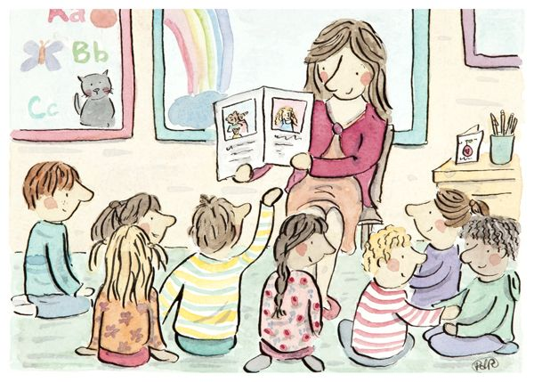

Quem nunca escreveu um bilhetinho afetuoso para aquele dileto amigo?
A troca de cartas é uma forma antiga, mas bastante eficaz de comunicação.Mesmo com a velocidade
da informação e tecnologpara o envio de e-mails e mensagens (por celular ou redes sociais), que
permitem uma interação comunicativa em tempo real, a carta ainda pode cumprir diferentes xora
funções: proporcionar a troca de afeto e carinho, além de fazer da escrita uma atividade prazerosa.
Bilhetes trocados na escola e cartas enviadas pelo correio pareciam apenas
formas de conversar quando não havia mensagens instantâneas. Essa explicação, porém, não alcança o motivo de
tantos papéis terem sido guardados por anos. A mesma frase escrita em um caderno qualquer podia ganhar outro
significado quando vinhade alguém importante. xora
A memória autobiográfica reúne acontecimentos ligados à própria história, e
objetos podem funcionar como pistas para recuperá-los. Uma carta antiga traz informações escritas, mas também
características materiais: caligrafia, dobras, marcas e até o envelope. Esses elementos ajudam a situar lembranças
em determinado período e a reconhecer vínculos importantes, dando ao papel um valor sentimental que ultrapassa sua
utilidade.
Pesquisas reunidas em blog publicado 08/08/2024 por Renata Gaspula examinaram
diferentes conexões entre objetos pessoais e lembranças. Essa relação oferece uma explicação para o
carinho dedicado a cartas e bilhetes antigos.


Entrar na sala de aula forçando um sorriso,
aguentar tudo calada, fingir que ninguém alí te odeia.
É como ter que cortar pedaços de você para se encaixar
em um grupo, constantemente o sentimento de que você
está sendo intrometida e se esforçando para estar ali.
Não tem como esquecer a constante sensação que mesmo
cheia de colegas você está sozinha e sem amigos.